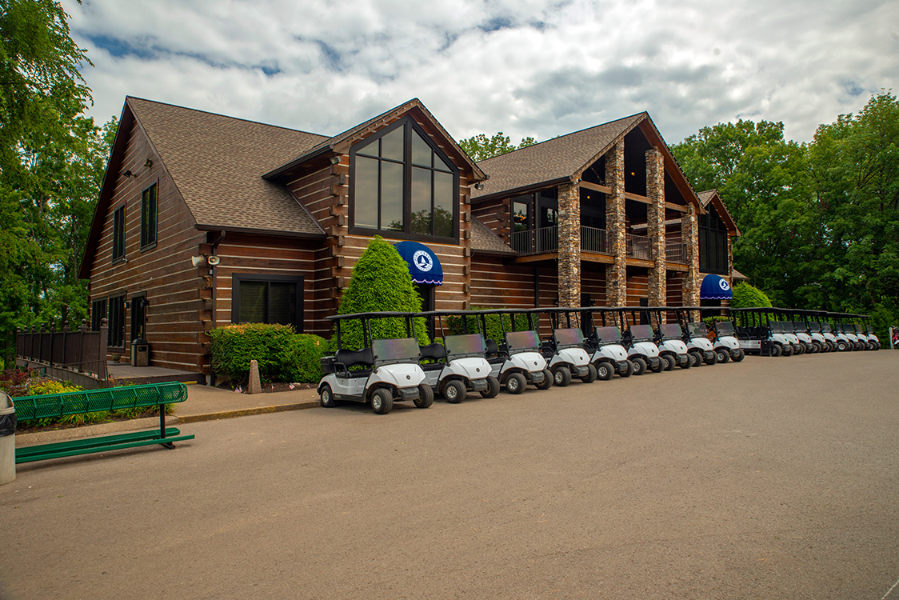

Pine Creek Golf Course sits in the rolling hills of Wilson County just twenty minutes east of Nashville, tucked off Logue Road in a setting that feels considerably more secluded than the drive suggests. Since opening in 1995, it has built a reputation as one of the best-value rounds in the Nashville area — a course that consistently earns praise for greens quality above most of its peers, a layout that offers two distinctly different nines, and a log cabin clubhouse that gives the place a character you don't find at a generic daily-fee operation. For many Mount Juliet and East Nashville golfers, Pine Creek is simply home.
The course was designed by Neil Carson and plays to a par 72 at 6,676 yards from the back tees with a course rating of 71.5 and slope of 124. General Manager Kirk Pickel oversees the operation. The bent grass greens and Bermuda fairways are the headline feature — Pine Creek is widely cited as maintaining some of the finest greens of any public course in the Nashville region, a distinction that drives consistent repeat play and keeps the course competitive with options that charge significantly more.
Pine Creek's most talked-about feature is the contrast between its two nines. The front nine plays in a links style — open, rolling terrain with wide fairways that tumble across the contours of the land, where wind can become a genuine factor and the challenge comes from ground game and course management as much as aerial precision. The back nine shifts to a more traditional parkland character with tighter tree-lined fairways that demand accuracy off the tee and reward strong iron play into the greens. Together they make for a round that doesn't feel repetitive, which is a genuine asset for regular players who would tire of eighteen holes of the same thing.
The par-3 sixth is the signature hole — a tree-framed iron shot over a large water hazard that tests both nerve and club selection. Forced carries appear throughout the course but are designed to be fair rather than punishing, giving beginners a reasonable line while offering better players genuine risk-reward decisions. The bent grass greens are consistently described by regulars as fast, true, and well-maintained regardless of season, which is the single thing that most distinguishes Pine Creek from its peer set in the Nashville market.
Pine Creek's log cabin clubhouse is one of the more distinctive facilities at any public course in Middle Tennessee. The building houses a well-stocked pro shop, snack bar, locker rooms, meeting rooms, and banquet facilities suitable for outings and private events. An open patio overlooks the course — a natural gathering spot before and after rounds that gives the property a genuine social atmosphere. Beverage carts operate on the course. Club rentals are available for visitors. Lessons can be arranged through the pro staff by calling (615) 449-7272 or emailing info@pinecreekgolf.net.
Pine Creek offers some of the strongest value in the Nashville area for the quality of conditions provided. Green fees with cart run approximately $52 on weekdays and $64 on weekends. Multiple time-based rate tiers are available — Early Bird, Mid Day, Twilight, and Super Twilight — which can bring the price down meaningfully depending on when you play. Rates are subject to change; call (615) 449-7272 or book online through the club's website for current pricing and availability. Proper golf attire is required. Jeans are permissible; cut-offs are not.
Pine Creek Golf Course is located at 1835 Logue Road, Mount Juliet, TN 37122, approximately 20 minutes east of Nashville off Interstate 40. From Nashville, take I-40 east to Exit 226A south on Highway 171 (Mt. Juliet Road), proceed to the fourth traffic light and turn left onto Highway 265 East (Central Pike), go 1.8 miles and turn right onto Logue Road, then drive 1.9 miles to the course on the left. Open daily 6:00 AM – 9:00 PM. Call (615) 449-7272 or email info@pinecreekgolf.net.